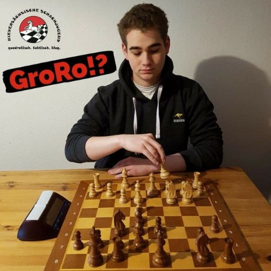
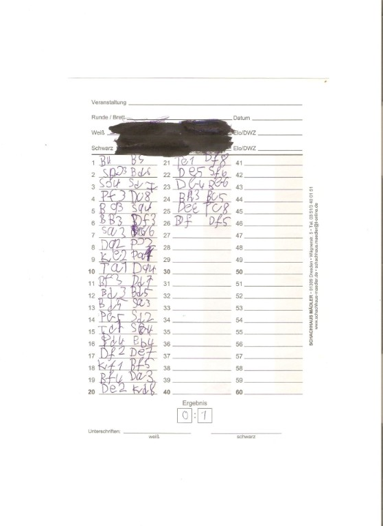
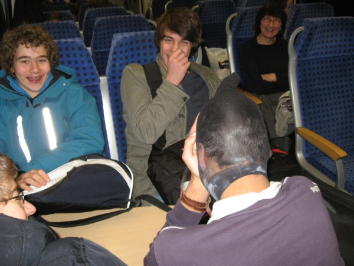
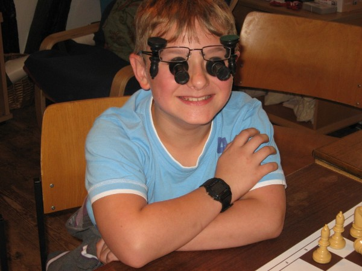
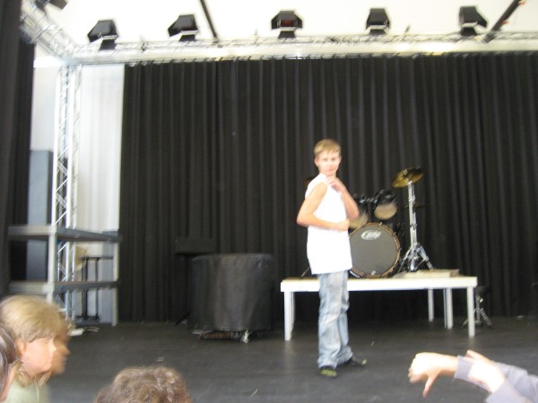

Lustiges
Reiten
Im Zug, der wie doch so häufig ca. eine Stunde Verspätung hat.
Thomas (sarkastisch): "Wenn wir geritten wären, wären wir schon längst in Wolfenbüttel angekommen..."
Tom: "Da müssten wir doch erst Reiten lernen."
Thomas: "Also ich kann Reiten. Ihr etwa nicht?"
Mark: "Du kannst also Reiten? Auf wem denn?"
Hero-Quest oder Schach?
Im Zug. Thomas grübelt (mal wieder) über neue Hero-Quest-Dungeons, -Helden und -Konzepte.
Thomas: "[...] Waldbrand, [...] Pyramide"
Alex (hörbar genervt): "Fahren wir gerade auf ein Schach- oder ein Hero-Quest-Turnier?!"
Zusammenhalt
Beim HeroQuest-Spielen. Marius Nekromant versucht gerade Moritz Alb in einen Zombie zu verwandeln.
Mark: "Hier sind aber viele Monster."
David: "Ja, aber die Monster sind nicht unser größtes Problem..."
Kassenprüfung
Marius (genervt): "Warum müssen wir das überhaupt machen mit der Kassenprüfung ?"
Thomas (erklärend): " Damit der Vorstand entlastet werden kann. Dies ist z.B. erforderlich, wenn der Kassenwart sich mit der Vereinskasse auf die Bahamas abgesetzt hat."
Rafael: "Ach, deshalb ist Antal nicht da..."
Keine Einladung
Die 9 jährige Anna klettert beim Outdoor-Training auf die Ballustrade des Schulhof-Pavillons. Thomas: " Anna, komm da sofort runter ! Wenn du da runterfällst, komm ich nicht zu deiner Beerdigung." Darauf Anna: "Du wirst sowieso gar nicht eingeladen."
Allein Essen
Rafael isst während des Trainings. Darauf Bennet: "Allein essen macht dick."
Rafael (trocken): "Das finde ich nicht schlimm."
Zukunftsaussichten
Thomas: "Wenn ich in die Hölle komme, kann der Teufel seine Sachen packen !"
Der Rumo sapiens
Beim Hero-Quest-Spielen.
Thomas: "Ich bin mir sicher, dass der Homo sapiens nur eine Zwischenstufe auf der Entwicklung vom Affen zum Menschen ist."
Darauf Rumo: "Ja, er entwickelt sich zum Rumo sapiens."
Thomas back in game
Nach seiner (misslungenen) Schöhnheits -OP ist Thomas im Schachtraining zurück: „Hallo, ich bin wieder da !“
Alle Schachkinder: „Oh, Scheiße !“
Thomas: „Hey, etwas mehr Respekt, wenn ich bitte dürfte.“
Ein Schachkind: „Was machen wir heute ?“
Thomas : „Eierlaufen....Sackhüpfen.“
Ein anderes Schachkind genervt: „Nicht schon wieder...“
Ein anderes Schachkind: „ Und was außerdem noch ?“
Thomas: „ Heute spielen wir Bullet-Schach.“
Alle Kinder jubeln.
Thomas: „Aber mit vorgegebener Stellung: Weiß Ke1, La1 und Sh1, und der schwarze König steht irgendwo in der Mitte. Ihr habt 3 Minuten, um matt zu setzen, und wehe ich erwische irgendjemanden, der das nicht kann....“
Brutal
Thomas (ehemaliger Boxer): "Ich mag Handball nicht. Das ist ja so eine brutale Sportart."
Darauf ein Schachkind: "Stimmt, das ist fast so brutal wie Schach..."
Aus der Bibel
Thomas: "Letztens habe ich während des Schachtrainings aus der Bibel vorgelesen....niemand hat was gemerkt...."
Theorie ist unnötig
Rafael während eines Trainingsmatches: "Ich brauche keine Theorie ! Ich weiß, dass dieser Zug gut ist."
Olympisch
Kasimir ist dauernd am Kippeln. Darauf der hinter ihm sitzende Lukas: "Wenn ich mir Kasimir so ansehe, dann bin ich mir sicher, dass Kippeln in 10 Jahren olympisch ist..."
Frisch eingestellt
Während eines Trainingsspieles ruft jemand: "Figuren zu verschenken....frisch eingestellt....Figuren zu verschenken."
Problemschach
Während der Schach-AG im HG.
Schüler: " Diese Aufgabe war aber schwer."
AG-Leiter: "Ja, das stimmt, sie ist aus dem Problemschachbereich."
Schüler: "Ja, Probleme habe ich im Schach genug..."
Zu dumm
Pavel: "Vielleicht kann Rita das machen ?"
Alex: " Wieviel Intelligenzpunkte hat Rita ?"
Rita: "2"
Darauf Lennard: "Nein, das ist zu dämlich..."
Anmerkung: (Es geht hier um das Spiel Hero Quest, bei dem Rita den Barbaren spielt, der zwar massig Körperkraft hat, dem aber nur 2 Intelligenzpunkte beschieden sind)
Vor langer Zeit
"Das habe ich damals so gespielt, als ich noch jung war" Rafael (10 Jahre)
Beim Lehrter Open
Endphase einer Partie beim Open in Lehrte: Der eine Spieler bietet (in völlig verlorener Stellung) seinem Kontrahenten Remis an. Darauf dieser (mit türkischem Akzent): " Waaaaas Remis ? Bin ich Sozialamt, oder was ?"
Bissig
LEM u8 in Verden. Der Auricher Betreuer Rene Martens ruft im Essensraum zwei ihm bekannte Eltern zu: " Setzt euch ruhig zu uns, wir beissen nicht." - Darauf ein Auricher Schachkind: " Ich schon !"
Bewerbung
Es wird ein 2 stündiger Schachtest geschrieben.
Tom (demotiviert): "Ich hab keinen Bock auf diesen Test, ich weiß nicht warum wir diesen Test überhaupt schreiben. "
Darauf Antal: "Den kannst du später als Bewerbungsunterlage einreichen....."
Zu wenige Züge
LMM u10 in Rotenburg. Ein Schachkind kommt bereits nach 15 Minuten traurig zu seinem Trainer gelaufen, weil er verloren hat. Darauf der Trainer: "Ooch, das ist ja schade, wenn man nur so wenige Züge gemacht hat, dann lohnt sich das Spielen ja fast gar nicht." Dann schaut sich der Trainer das Partieformular an.....es wurden über 80 Züge gespielt !
Arroganz wird bestraft
Schachschüler: "Wie sollen wir dich denn nennen ?"
Schachlehrer: "Ach, ich bin unter vielen Namen bekannt: Buddha, Allah, Gott, Manitou, Weltschöhnheit....."
Darauf die 7jährige Anna: " ....Toilette"
Breit
Tom zu seinem Gegenspieler: "Deine Stellung ist noch breiter als du !"
DB
Auf der Hinreise nach Braunschweig wird eifrig diskutiert, ob wir die Rückreise über Hannover oder über Seesen antreten sollen. Luan setzt sich vehement gegen Hannover ein. Auf die Frage warum, antwortet er: "In Hannover bekommen wir keinen Lokführer mehr....."
Sexy
Pavel beim Trainingsmatch: "Man ist meine Stellung sexy !"
Tierraten
Alex fragt im Kadertraining die anderen, welches Tier er wohl symbolisieren könnte. Darauf Antal: "Ein Schaaf !"
Schande
Schach-AG im HG. Ein Spieler zum anderen: "Du stellst ständig ein und kannst noch immer nicht die Schachregeln. Du bist eine Schande für diese AG !" Genau dieser Spieler, der das gesagt hatte, rochierte darauhin lang.....mit seiner Dame !
Astrologie
Am Vorabend der LEM unterhalten sich einige über astrologische Themen. (Außerdem wird dringend aufgrund körperlicher Bedürfnisse ein Löwemensch gesucht.....) Alle werden gefragt welches Sternzeichen sie haben. Nicole: Waage, Daniel: Steinbock, Sarah: Schütze, Thomas: Wassermann, Friedmar: Springer.....
Anmeldung zur LEM
Einen Tag später zur LEM-Anmeldung: Erste Frage: "Welches Sternzeichen bist du?"
Zu den Koalitionsverhandlungen 2017-?

Kalorien
"200....240.....360....720.......910..." Ein Schachkind rechnet gerade seinem Trainer vor wieviele Kalorien er gerade bei MacDonalds in sich hineinstopft.
Ausgelacht
Ein Schachkind beschwert sich während der Schach-AG bei seinem Gegner: "Hört auf mich auszulachen ! Das hat schon Antal getan.....und Rumo.....und Matthias......."
Zu schnell
NDVM 2017 in Magdeburg. Rita bekommt von ihrem Trainer, obwohl sie gewonnen hat, einen Anschiss, weil sie wieder mal zu schnell gespielt hat.
Thomas: "Hast du schon wieder Schnellschach gespielt ?!"
Rita (entrüstet): "Das war kein Schnellschach....das war Blitzschach."
Turmendspiele
Ein Lübecker Schachjugendlicher bei der NDVM in Magdeburg: "Ich mag Turmendspiele,.....aber nur wenn ich einen Turm mehr habe."
Das Sofa
Arved beim Kadertraining im BSW: "Wo ist das Sofa ?"
Partie von LJMM der u10 ääh zum Nachspielen

(Anmerkung der Redaktion: Die Namen der Spieler wurden geschwärzt...)
Deine Mutter
Deine Mutter spielt Schach gegen sich selbst, bietet Remis an und verliert.....
Schwanger
Lukas: "Wo ist Nils ?"
Thomas: "Der kommt heute nicht."
Lukas "Warum nicht ?"
Thomas: "Er ist schwanger."
Lukas: "Schon wieder ??"
Für Insider
Thomas zu Alexander Kanzow: "Wieso spielst du kein Königsgambit ?"- Darauf Alex: "Tu ich doch - aber ohne f4 !"
Springerfreuden
Constantin Elias Jäger (während einer Partie): " Wenn zwei sich streiten, freut sich mein Springer......"
Das Matt
Mathis während seiner Partie: "Ich stehe gut !" Darauf sein Gegenspieler Antal: "MATT !"Darauf Pavel: "Das Matt wird überbewertet."
Neuerung
Luca und Pavel spielen im Training eine Schnellschachpartie. Im 56.Zug meint Luca:" JETZT kommt meine Neuerung !"
Verstopfung
Schachtrainer während des Trainings: "Diese Kombination kann man auch als Verstopfung bezeichnen."
Daraufhin musste ein Schachkind pupsen. Alle lachen.
Schachtrainer: "Das war die Titelmelodie aus der weiße Hai."
Constantin:" Nein, das war die Nationalhymne !"
Königszüge
Schach-AG in der Albani-Schule. Der Schachlehrer erklärt gerade einigen Kindern das Mattsetzen mit König und Dame. Am anderen Tisch spielen auch einige Kinder. Von dort wird eine Frage gerufen: " Herr Lehrer ?" -"Ja"- "Darf der König wirklich nur ein Feld ziehen ?"- "Ja, natürlich !"- "Kacke !"
Homepage
Antal Mimkes erzählt einen Witz, der nicht soo viel Gelächter hervorrief. Dann fragt er: " Ich komm doch jetzt auf die Homepage, oder ??"
Die richtige Strategie
Der 6 jährige Marius Liestmann erklärt uns stolz seine Strategie bei der LJEM: "Zuerst hab ich meine Dame verloren....doch dann hab ich mir ne neue geholt.......und dann hab ich mattgesetzt !"
Auf der Zugfahrt nach Norderney
Thomas: "Morris ist so ein liebes und gut erzogenes Kind!", zehn Minuten später: "Darja ist in Bremen zu uns in den Zug gestiegen. Morris, könntest du sie bitte zu uns holen?"
Morris: "Denkst du, ich laufe hier durch den ganzen Zug, oder was ?"
Falsches Spiel
Tobi während einer Schachpartie zum Schirri: "Ich hab einen Vorbehalt!"
Optimismus!
Pavel Mimkes, nachdem er bei der LJEM 2013 erfahren hatte, dass Pattfallenspezialistin Darja eine Dame und zwei Springer weniger hat: "Keine Sorge, dann endet die Partie Remis!"
Zum Einschlafen...
Artur Balliel zu seinem Mitspieler im Kadertraining: "Huhu Michael, aufwachen! Die Partie ist zu Ende!"

Auf der Rückahrt von der DVM 2012 im Zug
Profispieler?
Mathias Tonndorf und Spartak Grigorian beenden ihre Partie bei der LEM 2013 in Verden. Sie endet mit Remis. Am Ende meint Spartak jedoch: "In der Eröffnung stand ich aber besser." Daraufhin Matthias Tonndorf entrüstet: "Eröffnung ?? Das war keine Eröffnung, was ich gespielt habe."

Nur Schach im Kopf !
Bezirksjugendeinzelmeisterschaften 2010 in Hameln
Nachdem ein Mitglied unseres Schachvereines die Teilnehmerliste der BJEM 2010 einsah: "Das ist eine KSV Rochade-Vereinsmeisterschaft.......mit Gästen."
Der Spieler Carl Andersohn (KSV Rochade) nach der vierten Runde: "Bisher habe ich nur gegen Leute aus meinem Zimmer gespielt."
Über das Niveau in der Schach-AG des Theodor-Heuss-Gymnasiums
AG-Leiter Thomas Post referiert:
"Im Grand-Prix-Angriff des geschlossenen Sizilianers kommen offene Zentrumsstrukturen wie z.B. in der Hauptvariante der Preußischen Partie nach e schägt d3 en passant so gut wie nie vor. Dagegen sieht man halboffene Zentrumsstrukturen wie in der französischen Abtauschvariante, wo es um schnellstmögliche Besetzung der offenen Linie mittels Schwerfiguren geht, statische Strukturen wie z.B. im Stonewallaufbau des Holländischen, bewegliche Strukturen wie sie z.B. in der Tarrasch-Verteidgung des Damengambits vorkommen oder dynamische Strukturen wie in z.B. im Hippopotamus-Aufbau oder im Damenindischen sehr häufig. Am meisten sieht man aber geschlossene Zentrumsstellungen wie z.B. in der Vorstoßvariante der französischen Partie, wobei es hier auf jedes einzelne Tempo ankommt, denn Schwarz öffnet gewöhnlich die c-Linie, um z.B. mit einem Minioritätsangrif à la Karlsbader Struktur die Bauernstellung des Anziehenden am Damenflügel zu unterminieren. (Pause) Hat das jeder verstanden?"
Irene: "Bahnhof."
Mark: "Ich hab noch nicht mal Bahnhof verstanden."
Thomas (niedergeschlagen): "Okay... Der dumme Springer in der Mitte soll sich da verpissen!"
Alle: "ACH SOOO... "
Lochade
Daniel bekommt mit wie ein Spieler trotz der Bauernstellung f2, f3, h2 kurz rochiert. Er meint: "Das ist keine Rochade, sondern eine Lochade."
"Hau den Lukas"
Nelo sieht zu, wie zwei Hannoveraner Spitzenspieler beim Schnellschach-Open in Wennigsen in hochgradiger Zeitnot die Schachuhr malträtieren: "Die spielen kein Schach, die spielen 'Hau den Lukas' "
Königsgambit ist schlecht
Nach ungefähr zehn Zügen merkt Manuel Drehwald, dass seine weiße Dame auf e1 und sein König auf d1 stehen. Dazu seine Bemerkung: "Deshalb war Königsgambit schlecht!"
0-0
Warum schreibt man die Rochade mit 0-0? Antwort: Weil es den König an ein stilles Örtchen bringt.
Kleine Kinder
Jonas Dyhazi (11 Jahre) im Kadertraining zu den anderen: "Benehmt euch hier nicht wie kleine Kinder..., auch wenn ihr noch welche seid."
Testergebnisse
Im Hainberggymnasium wird ein Schachtest geschrieben, den die Kinder nächste Woche wiederbekommen. Maximilian Reese sieht sich sein Ergebnis an und läuft jubelnd durch den Klassenraum: "Ich hab 14 Punkte, jaaaaaaa...,jaaaaaaa..." Auf einmal sagt Julius trocken zu ihm: "Das waren keine KMK-Punkte...,das waren deine DWZ-Punkte!"
Angebote
Nach seiner "langen" Partie bei den LJEM in Rotenburg kommt Michael Domke ins Analysierzimmer und meint: "Ich habe meinem Gegner ständig angeboten, aufzugeben. Aber er hat dauernd abgelehnt."
Knoppers
Ein Schachtrainer zieht sich bei den LEM in Rotenburg seinen fünften(!) Knoppers aus dem Süßigkeitenautomaten und meint: "Wehe jemandem, der das meiner Frau erzählt!"

Daniel bei der III. Göttinger Schulschacheinzelmeisterschaft
Neue Figurennamen
König = Grabstein, Dame = Laterne, Turm = Aschenbecher, Läufer = Zäpfchen, Springer = Hottehüh und Bauer = Boje
Nicht Denken
Ein Schachtrainer während der BJEM in Hameln zu seinen Schülern: "Ihr sollt nicht denken, ihr sollt schachspielen."
Dreifache Stellungswiederholung
Warum wurde die Ehe der Großmeisterin Skripchenko und dem Großmeister
Lautier geschieden?
-Wegen dreifacher Stellungswiederholung.
Am Brett
Thomas passt während einer Trainingsstunde nicht auf und wird auf dem Sofa von Rita und Gina "in die Mangel" genommen. Darauf Constantin (trocken): "Lasst Thomas auf dem Sofa in Ruhe !.....Er soll am Brett sterben...."